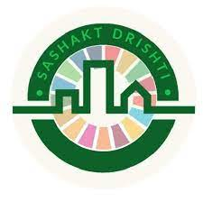
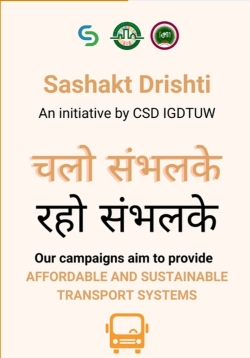
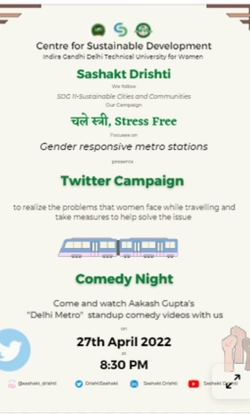
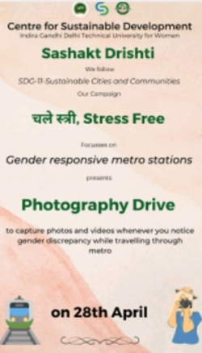

|
|
.png)
|
Introducing CSDIGDTUW has taken diverse initiatives setting international benchmarks not only in the academic domain but also in addressing pressing issues of society. The University has made an impact at the individual, family and community levels. The university has launched highly successful social outreach initiatives through the Centre for Sustainable Development aimed at working towards the United Nations Sustainable Development Goals. Six teams, working under CSD, cover 11 different SDG Goals. All the teams have launched comprehensive campaigns about pressing issues related to the SDGs and have disseminated knowledge to more than a thousand students at large. Our objective to create social leaders that are sensitive towards the preservation of the environment have in turn, sensitized the general public too, and the team’s tremendous accomplishments have brought in results. I’m sure that the endeavours of our students will reach out to the readers of this newsletter and bring about a transformation in the way that they perceive their lives and the lives of others. I wish all the best to the CSD team! CENTER FOR SUSTAINABLE DEVELOPMENTA unifying framework for peace and prosperity for people and the planet, both now and in the future, is provided by the 2030 Agenda for Sustainable Development, which was accepted by all United Nations Member States in 2015. The 17 Sustainable Development Goals (SDGs), which are an urgent call to action for all nations—developed and developing—in a global partnership, are at the centre of it. A unifying framework for peace and prosperity for people and the planet, both now and in the future, is provided by the 2030 Agenda for Sustainable Development, which was accepted by all United Nations Member States in 2015. The 17 Sustainable Development Goals (SDGs), which are an urgent call to action for all nations—developed and developing—in a global partnership, are at the centre of it.CSD is a completely student driven Youth Initiative creating Social Ambassadors of Change. |
SASHAKT DRISHTISashakt Drishti, working on SDG 11, believes that making the cities safe, inclusive and sustainable is of the utmost importance since the cities are the root of every other world problem. |
PHASE 1
|
PHASE 2
|
CAMPAIGN BY SASHAKT DRISHTIC H A L E S T R E E S T R E S S F R E E 
Sashakt Drishti conducted a Comedy Night and Twitter Campaign to spread awareness about the unique travel needs of women. This was followed by a speech where we conveyed the problems faced by women who use the metro. The audience shared their own experiences and anecdotes. 
To support the Twitter campaign, the audience were urged to capture the moments where women are facing issues while using Delhi Metro in real time. The team plans on preparing a report compiling the twitter response and these pictures and send them to the concerned authorities urging them to take the required action as soon as possible. 
|
PARTICIPATION IN EVENTS |

|